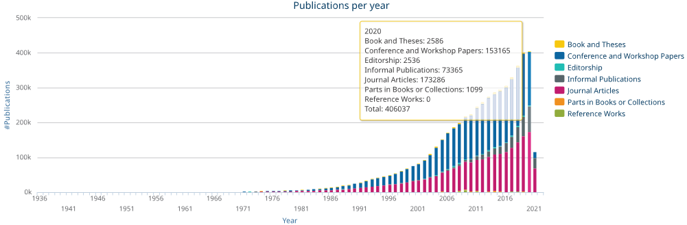
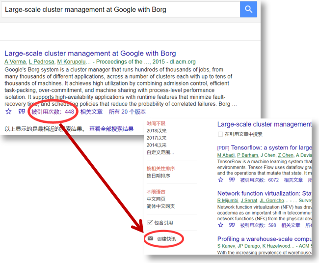
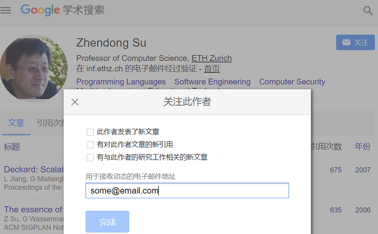
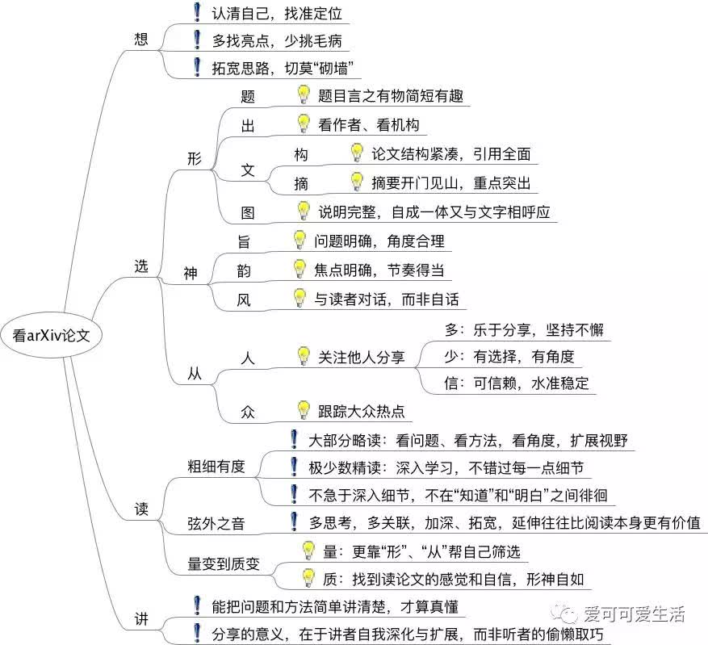
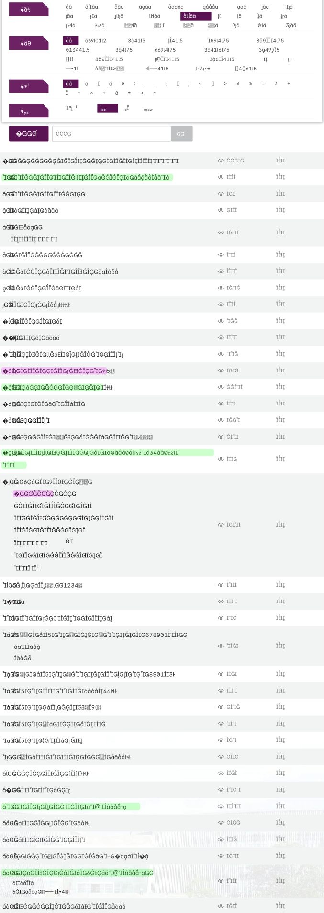

论文（Paper）是每个研究生读研路上挥之不去的“阴云”。 无论是否已经有了一个好的课题或想法，都首先要收集某个研究方向一定数量的论文，来了解相关的工作和最新进展（State of the art & practice）。 本文介绍了如何检索、收集计算机科学（CS）专业的论文，还介绍了相关的机构，学术会议和论文数据库。
TL;DR
从CCF推荐目录中感兴趣的 A类会议及期刊 中找论文即可。
按理说，开篇应该先要强调一下Paper对于科研的重要性的，直接把前辈的经验拿来吧：
- 周志华老师的一篇关于做研究与写论文的ppt
- 凌晓峰和杨强的《学术研究 - 你的成功之道》，这本书的英文原版是Crafting Your Research Future - A Guide to Successful Master’s and Ph.D. Degrees in Science & Engineering
首先要从前辈的经验中端正对Paper的态度：Paper不是科研的原因，而是结果（的一部分）。结果肯定是必要的，自然也就少不了Paper或者总结报告； 再者要借鉴前辈的学习方法和技巧，所谓“工欲善其事，必先利其器”，除了科研课题本身，养成一套高效的科研方法和习惯也是重要的。
重要的是要 有意识地探索和总结适合自己的科研方法，既要低头苦干，又要抬头看路，还要回头总结。
论文发表的过程
/ 期刊，特辑/专刊 → 多轮审稿 → 上线 \
Idea -> 编程、实验、写Paper、投稿 < ->出版，检索
\ 会议 → 审稿 → 赴会报告 /
简单介绍一下发表论文的过程：
- 首先投稿的Paper作者，一般是高校的的研究生，也有教师，比如UC Berkeley 的AMPLab；还有一些公司的研究院，比如微软，谷歌。显然，论文的出身对质量有很大影响。
- 期刊是传统的研究成果发表方式，一般期刊是季度，少有月度出版的，每期称为一个Issue，一年的各期集结为一个Volume。一般可以随时投稿给期刊，没有截稿日期（Deadline，ddl）的压力。投稿后一般要经过同行评审（Peer Review），针对审稿人的建议做大修，小修（Major，Minor Revision）等两三轮修改才能被接收，期间跨度一年多是常有的情况。如果有的期刊安排了专刊（Special Issue）计划，会公布一个截稿日期，审稿的进度会稍快些。
- 对快速发展的CS专业来说，期刊的节奏有点慢了，而且期刊版面有限，每期只能发布几篇到十几篇不等（有的期刊则动辄一卷几千页，所以，文章质量嘛……），所以上面发表的一般是一些理论性比较强的论文，或者综述性的论文；很多新成果转而发表在学术会议上来，这跟传统学科不太一样。
期刊分为 Transaction, Journal 和 Magazine 。这三者的学术严肃性依次降低，这可以从它们的封面上直观地看出来。严格来说Magazine不算是学术期刊了，上面很少发表新的原创性的内容，而是对当前进展的简介和综述，也会转发一些已经发表过的重要的Paper。
对于新手，先浏览一下Magazine，建立一个基本的概念还是有必要的，推荐Communications of the ACM（CACM, ACM通讯）。
很多会议每年举行一次，时间上也是比较固定的月份，会提前在会议网站上发布下一年的call for paper（cfp，征稿启事）和deadline（截稿日期）。投稿后，一般经过两三个月的审稿就会通知作者是否录用（Notifications）。被接收的Paper会要求按格式和Reviewers的意见稍修改后提交正式的最终版，称为Camera Ready。最后需要作者赴会做Presentation。
会议录用的所有Paper会结集出版，称为 Proceedings 。有的会议还会推荐一些优秀的Paper到合作的期刊，扩展后作为期刊论文发表。
会议分为 Symposium , Conference 和 Workshop。这三者的学术严肃性依次降低，大部分会议都称为 Conference。一般来说 Workshop 是随某个 Conference 一同举办，可能没有固定的主题，Paper质量与主会议有所差别。
通过这个过程，我们还可以知道如何 尽快 找到一篇感兴趣的文章：
- 对于期刊，一般投稿是很多的，编辑部会把已经接收但还没有排到出版期号的文章先放到网上在线出版，称为Early Access，即在线预出版；
- 对于会议，在确定了接收的文章后，会在会议网站的Program/Accepted Papers/Schedule等类似链接下给出列表，同时会Email通知作者准备提交Camera Ready版。这时有的作者就会把Camera Ready版放到自己的主页上。之后会议组委将论文集结提供给所有作者，还会将论文集发布到ACM或IEEE（这两个机构直接参与组织了很多会议）的论文数据库中。不同的会议组委效率不同，有的在开会前就上线出版了，有的在会议结束后还要等一段时间。
CS论文数据库
ACM, IEEE Computer等
一般会议和期刊都有自己的网站，但很少能在上面获取全文。又因为来源分散，直接从它们那里检索Paper很不方便。有几个大型的论文数据库，它们与期刊或者会议主办方合作，或者自己组织会议或编辑出版期刊，比如下面的表格及 图书馆页面截图。
注意， DL和机构的网站不同，下载论文要去DL。
| 机构 | Digital Library （DL） | 机构首页 |
|---|---|---|
| Association for Computing Machinery, ACM | ACM Digital Library dl.acm.org | www.acm.org |
| IEEE Computer Society | IEEE Xplore DL ieeexplore.ieee.org/ | www.computer.org |
| Elsevier ScienceDirect | www.sciencedirect.com | www.elsevier.com |
| Springer | Springer Link link.springer.com | www.springer.com |
| Wiley | Wiley Online Lib onlinelibrary.wiley.com | www.wiley.com |
ACM 和 IEEE Computer Society（计算机学会，IEEE还有电气、电子、通信等其它多个学会） 的网址后缀是 .org，这两个是CS领域最重要的学术组织，很多的CS学术会议都是由它们组织的。 Elsevier，Springer，Wiley的网址后缀则是 .com ，这些是学术出版商，内容以期刊为主，涵盖了CS及其它多个学科。 上面这几个数据库是 主要的论文全文来源。它们各自收录的会议和期刊基本没有重叠，从它们的数据库下载的Paper也都有各自的排版样式。
ACM作为最“正统”的计算机学术组织，它的DL除了收录ACM组织的会议和期刊全文之外，还会索引其它几家数据库的 元数据，但没有全文，可以通过DOI链接跳转到这几家数据库的全文页面。
IEEE出版的一些论文在 computer.org （实际是CSDL: www.computer.org/csdl/）和 Xplore DL 都可能搜到，这两个数据库是 分别 收费的，能在Xplore DL下载的不一定能在Computer.org下载。
ACM SIGs
ACM之下针对CS多个子方向的“分舵”，称为Special Interest Group，SIG，目前有三十多个ACM SIGs（或参考DL的这个链接SIGs ACM DL），比如
- 体系结构方向的SIGARCH、SIGHPC、SIGMETRICS、SIGMICRO、SIGMOBILE，
- 网络方向的SIGCOMM，
- 数据库方向的SIGMOD，
- 系统方向的SIGOPS，
- 软件工程方向的SIGPLAN、SIGSOFT
这些SIGs除了组织一系列的学术会议，还会评选本方向的一些奖项，包括 最佳论文，优秀博士论文 等（论文数据库中有时没有标明哪些是 Best Paper）。 此外，
- 有网站维护了一个部分会议的最佳论文列表，
- 还有下面要介绍的USENIX的各会议最佳论文。
有的SIG会选择一些高质量的文章，以Review，Newsletter 或 Notes 的形式重新发表，引用的时候最好引用最初的来源。
USENIX
要是学校的图书馆不差钱，把所有有价值的论文数据库都买买买来，那么下面截图中的电子资源列表应该很全了吧？然而还是少了一个重要的数据库：USENIX —— 它是免费的。 话说USENIX实在是个良心组织。USENIX最初称为Unix User Group。它组织了OSDI 、ATC、FAST、NSDI、LISA等会议，不但学术水平很高，贴近工业界，而且免费提供全文下载，还提供一些论文作者在会议上的slides及演讲视频。slides是对文章的提炼，读论文时可以参考。拿slides和视频来学习做Presentation，练习英语听力和口语也不错。
arXiv
arXiv， 是archive（归档）的意思，是一个由康乃尔大学维护的免费的多学科论文预出版（preprint）数据库。所谓预出版，就是说论文还没有经过同行评审，文责自负，文章质量参差不齐，所以一般不会作为正式的学术成果。有的学科习惯上先把文章公开到arXiv，之后再提交到会议。
EI和SCI
分别搜索上面的数据库还是有点麻烦，于是就有了一些聚合数据库，又称为索引。 想必很多同学早就听说EI和SCI：
- EI Engineering Index https://www.engineeringvillage.com/
- SCI Science Citation Index https://apps.webofknowledge.com/
只看 URL 似乎跟名字没啥关系，它们的Web界面体验也一般，而且它们不止索引了CS学科，直接通过关键词搜索经常给出不相关的内容。
其实这两个数据库通常是在 已知文章标题的情况下 检索是不是被它们收录了，而 不是 用来收集文章的。
要确定某个会议论文集或者期刊是否被EI或SCI收录，
- 在EI收录列表 页内搜索Compendex Source List，会找到一个Excel表格的链接，下载下来会发现这个表格是受保护的，但可以筛选标题（而且最后一个WorkSheet有中文翻译哦，满满的土洋结合，中国特色）。嘘~~ 也许你可以参考这个脚本解除保护，还要建议把title列中每个单元格开头的
=替换掉。这个Excel的title是排好序的，方便顺序浏览，比如有个杂志名叫Computing，真是起的好名字，如果直接搜索是肯定搜出一堆结果，所以，即便找到名字一样的期刊，最好也要再确认一下ISSN号。但是！，这个Excel表格并不完整，如果没有在表中搜索到，还是需要在EI的网站上搜索文章标题才能最终确认。 - 在
WebOfKnowledge的网站查询之前，一定 要选择数据库为检索 Web of Science 核心合集，等页面自动刷新之后，还要在页面下部展开“更多设置”，只选中Science Citation Index Expanded (SCIEXPANDED) 1900年至今这一项，然后才能查询出根正苗红的SCI（E）。请务必参考这个截图。可以在SCI收录列表直接输入期刊的名称来查询该期刊是否被SCI收录，但感觉这个查的也不全。还是要充分利用SCI的中国特色了，因为还有一个国内整理的SCI期刊列表：中国科学技术信息研究所SCI（E）论文期刊分区列表，这是一个有一万三千多行的Excel表格，简单粗暴。
上面的这些数据库可以免费检索标题和摘要，购买全文则价格不菲。如果学校的图书馆购买了这些数据库，一般会识别用户的IP地址，在学校网络范围内可以直接下载PDF全文。 校外就没有这么方便了，好在很多作者在Paper被录用后会在自己的主页上挂出PDF全文，从Google Scholar上可以搜索到这些PDF全文的链接，非常方便。 话说只要是能花钱买到的东西，去万能的 淘宝 肯定能找到，就看是买 VPN/代理，单篇文章，还是 整个数据库 了。
dblp
dblp.org ，或dblp.uni-trier.de或dblp.dagstuhl.de， 是专注于CS学科的文献 元数据索引 数据库，优势是收集得相当完整，链接也很有规律，比如特定会议的 FSE 2016 https://dblp.org/db/conf/sigsoft/fse2016.html 或者某个作者的全部论文列表（dblp对重名作者处理得很好），只能搜索标题或作者等元数据，用来初步筛选论文非常方便，需要获取全文时还是要跳转到上面的几个数据库，数据更新也稍微滞后一点。 2015版CCF目录中的会议和期刊都是dblp的链接。
dblp 列出了关于CS论文的一些统计数据，比如（2016年10月查询）
另外，ACM DL也有一个类似的统计。

而且dblp整站的数据都可以下载为一个xml文件，以供进一步挖掘。
DOI
在查找或引用论文时经常会遇到DOI(Digital Object Identifier)，wikipedia介绍DOI“是一套识别数字资源的机制，涵括的对象有视频、报告或书籍等等。它既有一套为资源命名的机制，也有一套将识别号解析为具体地址的协议”。著名的 SCI-HUB，可以通过DOI免费获取不少全文。
其它
从Google Scholar搜索全文时可能会跳转到下面这几个网站，因为它们会保存一些别人分享的全文。
- Semantic Scholar https://www.semanticscholar.org
- CiteSeerX https://citeseerx.ist.psu.edu/
- ResearchGate https://www.researchgate.net/ ，这是一个学术社交网络
CCF目录
EI和SCI只是两个论文数据库，但能够发表被EI和SCI收录的文章变成了能够毕业，能否获得奖学金，能否获得基金的指标。由于时代的限制，EI和SCI被赋予了不相称的地位和意义，而且短期看还是如此。 更 “不幸” 的是，对于CS的学生，还有一个CCF目录）摆在面前。其实并非是不幸，而是十分幸运，因为CCF目录不像是一个紧箍咒，而更像是一个入门指南。
首先说中国计算机学会 CCF是国内的类似于ACM的计算机学术组织。也许某位同学的导师就是CCF会员。相比EI和SCI收录的成百上千的会议和期刊，CCF维护的目录显然精简得多。 考虑到对EI和SCI指标要求的实际情况，目录选取的 大多 是被EI或SCI收录的，具体划分为10个子方向，并区分出A，B，C三个等级。 A，B类的会议和期刊的文章学术质量较高。这个质量不是简单通过所谓影响因子等机械的数据来评价的，而是综合了多种因素，国际上也获得比较广泛认可的。比如，翻一下本科的《现代操作系统》这本经典教材的参考文献，会发现其中引用的有不少SOSP，OSDI，ASPLOS，TCS等CCF A类会议和期刊。
如果只看标题和摘要，有的期刊/会议文章看起来非常值得一读，比如 Future Generation Computer Systems，FGCS上的文章。如果仔细读一下文章全文，经常是大失所望。好在CCF只给了FGCS C类的评级。
随着越来越多的研究生进入工业界，论文对码农来说也就不那么神秘了。看到别人写的文章末尾附上了一大堆英文论文，也不会被镇住了，还要看看这些文章发在哪些会议或者期刊上。
其实二八定律也符合学术界，对CS专业来说比例可能更甚。事实是大部分的文章都不值得细读。这时就显现出CCF评级的价值了。仅从CCF-A类 会议 搜集资料就足够了。
上面提到ACM有三十多个SIGs，而CCF则只划分了10个子方向，不同的视角有不同的划分结果，这里有ACM的更详细的分类系统CCS，以及有重叠的SIGs大类划分，还有wikipedia上的一个划分。
Google Scholar（谷歌学术）
Google Scholar非常强大又简单易用。虽然它不只收录CS专业的文献，但很容易搜索到准确的结果。我习惯先在谷歌学术上搜索，如果搜不到就改用 高级搜索，实在不行再去ACM DL、IEEE Xplore或者Google网页搜索。
创建快讯
可以在Google Scholar创建某个关键词或某篇文章的快讯，发送Email通知最新的搜索结果。 接收快讯 不需要 注册谷歌账号，任何有效的 Email 地址皆可。如果注册了谷歌学术账号，还可以获得个性化推荐的文章。
谷歌学术有 3 种快讯：
- 关键词快讯：如果在谷歌学术搜索完整的文章标题，只有一条匹配结果的话，谷歌会很自信地 不 在页面左侧显示 “创建快讯” 的入口链接；有多条结果时，才会显示。这是关键词快讯，是从文章全文中检索的，跟普通的谷歌网页搜索快讯差不多，查询结果可能有不少无关项，准确度较差，不建议使用；
- 引用快讯：点击文章项的 “被引用次数：xx” 链接，在新的引用项列表页，左侧同样有 “创建快讯” 链接，这时创建的是引用该文章的快讯，相当于科研人员人工添加的项，是最准确的，推荐使用；不足之处是，对比较新的文章，还没有被引用过的话，就没有引用页，也就无法获取这个 “创建快讯” 入口链接… 解决办法可 参考这个 StackExchange 问题 ；
- 作者快讯：如果某位作者在谷歌学术创建了个人主页（如 苏振东教授的主页），可以点击其主页上的 “关注” 按钮，获取其 新文章，该作者文章的新引用，相关研究的新文章，推荐前 2 个选项即可。


必应学术www.bing.com/academic、百度学术 xueshu.baidu.com等跟谷歌学术比差距还很大啊!
ACM DL列表
关于ACM的杂志，特别推荐
- Communications of the ACM, CACM， in dblp (CCF曾经选译部分CACM文章，出版为CACM中国版，但2016年后没有继续下去)
- Queue也值得一看，有一些文章会同时发表在CACM的Research for Practice栏目
期刊中，推荐ACM Computing Surveys, CSUR， in dblp
IEEE Computer列表
USENIX组织的会议列表
USENIX组织的会议列表，其中包括ATC，FAST，LISA，MobiSys，NSDI，OSDI，VEE及HotCloud，HotOS等一系列 HotXXXX 的Workshop。
国内三个学报
国内论文数据库
谢涛老师的指导建议
软件工程学科知识体系
软件工程学科知识体系 Software Engineering Body of Knowledge, SWEBoK, ISO/IEC TR 19759:2005(wiki, SWEBoK@IEEE Computer, PDF 全文)。
其它链接
- The morning paper(已停更), an interesting-influential-important paper from the world of CS every weekday morning
- IEEE Technical Committee on Data Engineering
- YOCSEF专题论坛：从LNCS事件反思中国学术论文的发表
如何读论文
- Efficient Reading of Papers in Science and Technology(pdf)
- How to Read a Paper(pdf)
- How to Read a Technical Paper
- 《学术研究 - 你的成功之道》第3章

如何写论文
[Todo]辅助工具
- 会伴
- Trans. on BigData的学术文献处理专刊 Vol. 2 Issue 1，Vol. 2 Issue 2
- Scopus
- Docear
- Mendeley
- Zotero
如果所在的实验室没有什么积累，暂时没有好的idea/topic，不妨去浏览一下感兴趣的大方向的A类会议近三年或五年的文章列表，总会有几篇比其它文章更有意思，这就把范围缩小一些了；然后再从这几篇文章里提炼出关键词，去 en.wikipedia.org 上搜索一下这个关键词，再从Related Work扩展，体验一下这个细分领域涉及的问题。找出来这个细分领域里发文章比较多的作者和研究小组（实验室），去作者和小组的主页看看。这个前期工作其实花不了一周的时间，然后收集了一些相关的论文，粗览一遍，筛选出几篇或十几篇值得仔细研读的。
我们不妨通过相关论文的数量来定义一个细分的领域，比如武断地说，100篇或150篇。这个具体的数量不是关键。一个领域能发的文章必定是有限的。太多的话说明问题太复杂，还要细分，太少的话，如果不是幸运地发现了新的方向，就是问题太 Trivial 了。而这其中，又只有几篇或十几篇是开创性的，值得非常仔细地研读的。
如果读完核心的几篇文章后还是没有新的想法，那就只好重复上面的过程，重新寻找另外感兴趣的领域了。
综述文章，一般会介绍收集相关论文的过程，方法大都类似，即所谓 Systematic Literature Review (SLR) （参考：Guidelines for performing Systematic Literature Reviews in Software Engineering），可以随便找一篇当作论文搜集方法的教程来看。
其实 SLR 方法是完全新手才用的文献收集方法，或者是为了发综述文章看起来工作量大/方法严谨。对某个主题稍有了解后，应该可以识别出来相关的会议，期刊，研究组，也就是发现了所谓的“圈子”了。效率高一点的就是从相关顶级会议/期刊近几年的文章列表中筛选，或者去作者/小组主页筛选，当然，还有订阅谷歌学术快讯。
知乎上的几个相关问题
如何访问Google Scholar
- SetupVPN
- 买翻墙服务
- 肉身翻墙
PS:
- A Survival Guide to a PhD
- 研磨记 - 豆瓣阅读(原文PhD Grind，似乎已被作者删除。还能找到转载。)
- Rob Pike: Systems Software Research is Irrelevant, 2000
- Steven Hand: Doing a Systems PhD, EuroDW11
- Peter Druschel: How to do systems research, EuroDW18

2021-05-24 修订：更新链接，部分文字和插图。